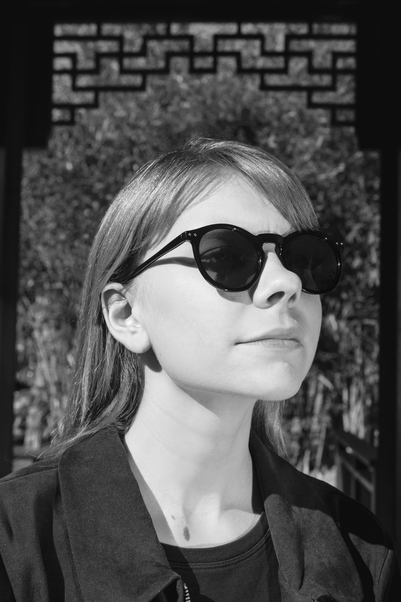

WHO'S
THAT LADY?
Kayla Lake was born & raised in
Northern California, where she
developed a burning passion for
graphic design, street tacos and
not using the oxford comma.
She has experience in multiple
facets of design — including
ground-up brand development,
UI/UX, magazine and logo design.
She currently resides in San Luis
Obispo, where she is studying
graphic communication at Cal Poly.